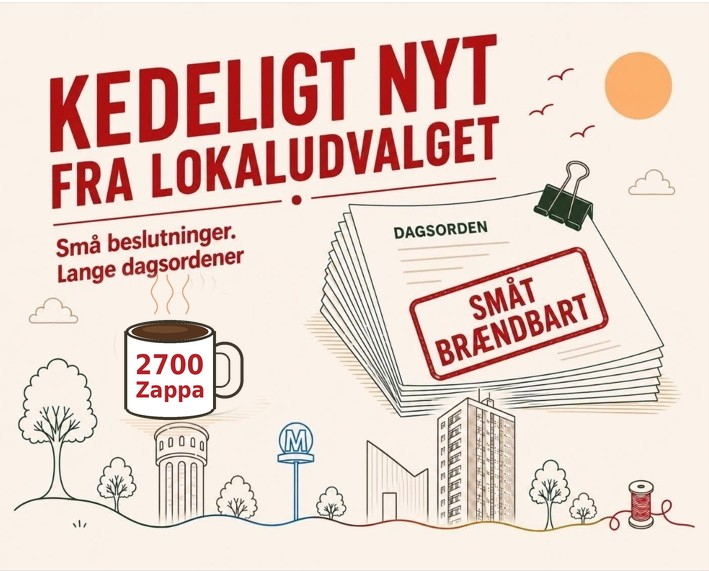

Clickbait fra Lokaludvalget
UGENS DRAMA – Boligdrama: 6 skæve boliger?
Det skete der faktisk: Kommunen undersøger, om der skal bygges skæve boliger på grunden ved Hyrdevangen 10a. Forvaltningen vurderer, at der er plads til seks. Socialudvalgets medlemmer skulle mødes med lokaludvalget på Bellahøj Skole mandag. Efter planen behandler Socialudvalget sagen inden nytår.
Status: IKKE BESLUTTET · Tørhed: 1 af 5 citronmåner
Læs mereUGENS TAL – Afstemnings-chok: 8-6-4
Det skete der faktisk: Sådan stemte lokaludvalget om sin nye organisering. 8 stemte for forslag 2, der bygger på de tre temaer fra 2700Taler, 6 stemte for forslag 1, og 4 undlod at stemme. Lokaludvalget organiserer sig nu efter forslag 2 og drøftede at evaluere det efter tre måneder.
Status: VEDTAGET · Tørhed: 4 af 5 citronmåner
Læs mereUGENS VÆR MED – Like-feber: 31 ideer til 2700
Det skete der faktisk: Dialogplatformen 2700taler.dk er gået i luften. Her kan alle læse, kommentere, dele og like 31 idéer til den nye bydelsplan, fx at åbne øverste etage i Brønshøj Vandtårn og omdanne Husum Torv. I november står lokaludvalget med kaffevogne i Tingbjerg og på Brønshøj Torv.
Status: ÅBEN FOR ALLE · Tørhed: 2 af 5 citronmåner
Læs mereUGENS SKÆVE – Sne-alarm: Fælles brev om sne
Det skete der faktisk: Lokaludvalget skriver under på en fælles henvendelse om snerydning til Klima-, Miljø- og Teknikudvalget, som Valby Lokaludvalg har taget initiativ til. Lokaludvalget ved, at nogle veje skal prioriteres, men ønsker bedre snerydning af fortove og cykelstier end sidste vinter.
Status: VEDTAGET · Tørhed: 3 af 5 citronmåner
Læs mereDet var så sidste krumme af den citronmåne. Vi sætter vand over til en ny i næste uge.